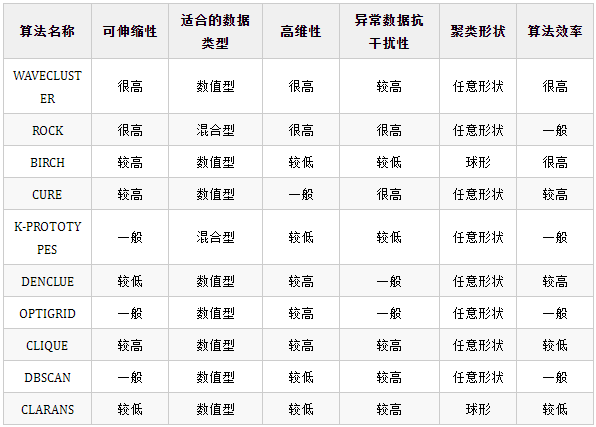

非监督学习
相关概念
什么是非监督学习？
非监督学习是机器学习任务的一种。它从无标记的训练数据中推断结论。最典型的无监督学习就是聚类分析，它可以在探索性数据分析阶段用于发现隐藏的模式或者对数据进行分组。一句话：给定数据，寻找隐藏的结构。
常见的非监督学习包括哪些？
无监督学习算法有几种类型，以下是其中最重要的12种:
- 聚类算法
k-means聚类是一种流行的聚类算法，它将数据划分为k组。 - 降维算法
降低了数据的维数，使其更容易可视化和处理主成分分析(PCA)是一种降维算法，将数据投影到低维空间，PCA可以用来将数据降维到其最重要的特征。 - 异常检测算法
支持向量机是可以用于异常检测(示例)。异常检测算法用于检测数据集中的异常点，异常检测的方法有很多，但大多数可以分为有监督和无监督两种。监督方法需要标记数据集，而无监督方法不需要。无监督异常检测算法通常基于密度估计，试图找到数据空间中密集的区域外的点。一个简单的方法是计算每个点到k个最近邻居的平均距离。距离相邻点非常远的点很可能是异常点。还有很多基于密度的异常检测算法，包括局部离群因子(Local Outlier Factor,LOF)和支持向量数据描述(Support Vector Domain Description,SVDD)。这些算法比简单的k近邻方法更复杂，通常可以检测到更细微的异常。大多数异常检测算法都需要进行调整，例如指定一个参数来控制算法对异常的敏感程度。如果参数过低，算法可能会漏掉一些异常。如果设置过高，算法可能会产生误报(将正常点识别为异常点)。 - 分割算法
分割算法可以将图像分割为前景和背景。这些算法可以在不需要人工监督的情况下自动将数据集分割成有意义的组。这个领域中比较知名的一个算法是k-means算法。该算法通过最小化组内距离平方和将数据点分成k组。另一种流行的分割算法是mean shift算法。该算法通过迭代地将每个数据点移向其局部邻域的中心来实现。mean shift对异常值具有较强的鲁棒性，可以处理密度不均匀的数据集。但是在大型数据集上运行它的计算成本可能很高。高斯混合模型(GMM)是一种可用于分割的概率模型。以前gmm需要大量的计算来训练，但最近的研究进展使其更快。gmm非常灵活，可以用于任何类型的数据。但是它们有时并不能总是产生最好的结果。对于简单的数据集，k-means是一个很好的选择，而gmm则更适合于复杂的数据集。mean shift可以用于任何一种情况，但在大型数据集上计算的成本会很高。 - 去噪算法
小波变换可以用于图像去噪。但是各种来源可能会产生噪声，包括数据损坏、缺失值和异常值。去噪算法通过减少数据中的噪声量来提高无监督学习模型的准确性。现有的去噪算法有多种，包括主成分分析(PCA)、独立成分分析(ICA)和非负矩阵分解(NMF)。 - 链接预测算法预测数据点之间的未来连接
例如，网络中两个节点之间的未来交互，链接预测可用于预测哪些人将成为社交网络中的朋友。 更常用的链接预测算法之一是优先连接算法，它预测如果两个节点有许多现有连接，则它们更有可能被连接。另一种流行的链路预测算法是局部路径算法，它预测如果两个节点共享一个共同的邻居，那么它们更有可能被关联。该算法可以捕获“结构等价”的概念，因此在生物网络中经常使用。最后，random walk with restart算法也是一种链路预测算法，它模拟网络上的一个随机走动的人，在随机节点处重新启动步行者。然后，步行者到达特定节点的概率被用来衡量两个节点之间存在连接的可能性。 - 强化学习算法
通过反复试验来进行学习Q-learning是基于值的学习算法的一个例子;它实现简单并且通用。但是Q-learning有时会收敛到次优解。另一个例子是TD learning，它在计算上Q-learning学习要求更高，但通常可以找到更好的解决方案。 - 生成模型
算法使用训练数据生成新的数据自编码器是生成模型，可用于从图像数据集创建独特的图像。在机器学习中，生成模型是一种捕捉一组数据的统计属性的模型。这些模型可以用来生成新的数据，就像它们所用的训练的数据一样。生成模型用于各种任务，如无监督学习，数据压缩和去噪。生成模型有很多种，比如隐马尔可夫模型和玻尔兹曼机。每种模型都有其优缺点，并且适用于不同的任务。隐马尔可夫模型擅长对顺序数据建模，而玻尔兹曼机器更擅长对高维数据建模。通过在无标记数据上训练它们，生成模型可以用于无监督学习。一旦模型经过训练，就可以用来生成新的数据。然后这些生成的数据可以由人类或其他机器学习算法进行标记。这个过程可以重复，直到生成模型学会生成数据，就像想要的输出。
非监督学习的主要特点？
-
无标签
-
无反馈
-
寻找隐藏的结构
什么是非监督学习的功能？
- 求数据的集群
- 求出数据的低维表达
- 查找数据有趣的方向
- 有趣的坐标和相关性
- 发现显著的观测值和数据集清理
参考
https://www.zhihu.com/question/24448657/answer/616164140
https://www.zhihu.com/question/23194489/answer/41744596
聚类算法
介绍下Kmeans算法？
是一直监督的学习方法，主要用于聚类，通过方法将数据分为K个类。
聚类算法的分类
聚类算法一般可以用基于划分、基于层次、基于密度、基于网格、基于模型、基于图等方式来进行分类。
Kmeans如何选择初始点？
常见的方法是随机的选取初始质心，但是这样簇的质量常常很差。处理选取初始质心问题的一种常用技术是：多次运行，每次使用一组不同的随机初始质心，然后选取具有最小SSE（误差的平方和）的簇集。这种策略简单，但是效果可能不好，这取决于数据集和寻找的簇的个数。
第二种有效的方法是，取一个样本，并使用层次聚类技术对它聚类。从层次聚类中提取K个簇，并用这些簇的质心作为初始质心。该方法通常很有效，但仅对下列情况有效：（1）样本相对较小，例如数百到数千（层次聚类开销较大）；（2）K相对于样本大小较小
第三种选择初始质心的方法，随机地选择第一个点，或取所有点的质心作为第一个点。然后，对于每个后继初始质心，选择离已经选取过的初始质心最远的点。使用这种方法，确保了选择的初始质心不仅是随机的，而且是散开的。但是，这种方法可能选中离群点。此外，求离当前初始质心集最远的点开销也非常大。为了克服这个问题，通常
该方法用于点样本。由于离群点很少（多了就不是离群点了），它们多半不会在随机样本中出现。计算量也大幅减少。
大体流程描述一下
- 随机选择k个点作为中心点
- 分簇：利用定义好的距离（可以是欧式或者其他）对比每个点到k个点哪个近，则为哪个簇
- 更新：将第k个簇取平均得到新的中心点
- 循环23步骤直到中心点不变（可以设定收敛的最小误差或者设置迭代轮数）
Kmeans有哪些不同距离度量方式？
-
欧几里得距离
-
曼哈顿距离
-
余弦距离
如何选取k？
-
手肘法
核心指标是SSE误差平方和，外面是对k求和，里面是对簇求和，求和内容是每个样本和他所属簇的均值的差的平方。核心思想就是随着聚类数k增大，样本划分更加精细，SSE会越来越小，曲线呈现下降趋势，找到一个点是骤降的，即下降幅度最大，也即是最后是在手肘地方 -
Gap Static
不需要像上述手肘一样还需要画出来去判断，只需计算值，当这个值最大时，它所对应的k就是最好的，方便批量化作业 -
根据业务选取
为什么会产生空簇？
这就要从簇中元素的分配说起。设当前的簇数为n，那么依次计算n个簇的质心，然后依次遍历所有元素，将其分配到到距其最近的一个质心簇中。在这个分配过程中，就可能存在没有一个点被分配到该质心中，这就产生了空簇。
如何对空簇进行处理？
如果可以减少聚类的类数，那么就可以尝试直接放弃该空簇。
重新运行算法再次随机分类
将离其所属簇最远的点分配给空簇
K-means对异常值是否敏感？为什么？
K-means对异常值较为敏感，因为一个集合内的元素均值易受到一个极大值的影响。当存在异常值的情况下，均值所计算出来的中心位置很可能不能够反映真实的类别中心。
如何评估聚类效果？
聚类往往不像分类一样有一个最优化目标和学习过程，聚类更像一个统计方法，将相似的数据和不相似的数据分开。所以，评估聚类效果可以从以下维度下手：
（1）聚类趋势（对数据进行评估）
霍普金斯统计量(Hopkins Statistic)评估给定数据集是否存在有意义的可聚类的非随机结构。如果一个数据集是由随机的均匀的点生成的，虽然也可以产生聚类结果，但该结果没有意义，聚类的前提是需要数据非均匀分布的。
（2）判断聚类的簇数是否为最佳
可用业务分析法、观察法、Gap Statistic方法等找到最佳的分类数与实际簇数做比较（见第四点）。
（3）聚类质量
因为是无监督学习，所以一般通过评估类的分离情况来决定聚类质量。类内越紧密，类间距离越小则质量越高。
Kmeans优缺点？
-
优点
时间复杂度低，NKt，样本数乘以簇数乘以迭代轮数，接近线性 -
缺点
- 对数值敏感（因此需要做预处理、归一化处理），对异常值敏感（因此需要做离散点处理）
- k难以选取
- 聚类效果依赖于中心初始化
- 局部最优
Kmeans++相比于Kmeans做的优化？
假设已经选取了n个初始聚类中心，则在选择n+1个聚类中心时，距离当前n个聚类中心越远的点会有更好的概率被选择为第n+1类聚类的中心。聚类中心当然是互相隔离的越远越好，之后的算法步骤同于k-means。（第一个点仍然是随机初始化）
Kmeans和EM算法的联系？
Kmeans等价于用EM算法求解以下含隐变量的最大似然问题，（c就是取的k，从1到K）。
E步求上述给定x和mui下c的条件概率期望，这里条件概率可以定义为如果分到最小类则为1，到其他类距离比最小的大，则为0。求期望也即是使P概率最大化。相当于先固定好了质心mui，然后将每个点找到离它最近的簇c。
M步，更新mui参数，此时是每个簇c已确定，对应于kmeans里更新聚类中心。
介绍西喜爱DBSCAN算法？
DBSCAN（Density-Based Spatial Clustering of Applications with Noise），具有噪声的基于密度的聚类方法）是一种基于密度的空间聚类算法。 该算法将具有足够密度的区域划分为簇，并在具有噪声的空间数据库中发现任意形状的簇，它将簇定义为密度相连的点的最大集合。
DBSCAN算法流程是什么样的？
（1）从数据集中任选一个未访问过的点作为初始点，这个点称为“种子“，”。以该初始点为圆心，以e为半径画一个圆，圆形区域即为该点的邻域
（2）如果在该初始点的邻域中至少含有MinPts个点，则该点是一个核心对象（core object），聚类开始，该点成为新聚类中的第一个点。否则，该点将被标记为噪声点（noise）。在这两种情况下，这一点都被标记为“已访问（visited）”。
（3）对于新聚类中的第一个点，其距离内的点都成为同一聚类中的一部分。
（4）若核心对象邻域内的点满足步骤（2）的条件，则成为新的核心对象，并吸纳其距离内的点为同一聚类中的一部分，不断重复此过程，直到该聚类附近的所有点都已被访问。
（5）当完成当前的聚类时，重新检索下一个新的未访问点，重复步骤（1）~（4），直到所有点都被标记为“已访问”。
DBSCAN中的参数如何确定？
DBSCAN也是一种较为常用的算法，DBSCAN中重要的参数是Eps和MinPts，那么这两个参数该如何确定呢？
(1) Eps的值可以使用绘制k-距离曲线(k-distance graph)方法得当，在k-距离曲线图明显拐点位置为对应较好的参数。若参数设置过小，大部分数据不能聚类；若参数设置过大，多个簇和大部分对象会归并到同一个簇中。
K-距离：K距离的定义在DBSCAN算法原文中给出了详细解说，给定K邻域参数k,对于数据中的每个点，计算对应的第k个最近邻域距离，并将数据集所有点对应的最近邻域距离按照降序方式排序，称这幅图为排序的k距离图，选择该图中第一个谷值点位置对应的k距离值设定为Eps。一般将k值设为4。
(2) MinPts的选取有一个指导性的原则（a rule of thumb），MinPts≥dim+1,其中dim表示待聚类数据的维度。MinPts设置为1是不合理的，因为设置为1，则每个独立点都是一个簇，MinPts≤2时，与层次距离最近邻域结果相同，因此，MinPts必须选择大于等于3的值。若该值选取过小，则稀疏簇中结果由于密度小于MinPts，从而被认为是边界点儿不被用于在类的进一步扩展；若该值过大，则密度较大的两个邻近簇可能被合并为同一簇。因此，该值是否设置适当会对聚类结果造成较大影响。
DBSCAN的主要参数是？
邻域半径R和最少点数目minpoints
解释下密度直达，密度可达，密度相连，非密度相连的关系？
如果P为核心点，Q在P的R邻域内，那么称P到Q密度直达。任何核心点到其自身密度直达，密度直达不具有对称性，如果P到Q密度直达，那么Q到P不一定密度直达。
如果存在核心点P2，P3，……，Pn，且P1到P2密度直达，P2到P3密度直达，……，P(n-1)到Pn密度直达，Pn到Q密度直达，则P1到Q密度可达。密度可达也不具有对称性。
如果存在核心点S，使得S到P和Q都密度可达，则P和Q密度相连。密度相连具有对称性，如果P和Q密度相连，那么Q和P也一定密度相连。密度相连的两个点属于同一个聚类簇。
如果两个点不属于密度相连关系，则两个点非密度相连。非密度相连的两个点属于不同的聚类簇，或者其中存在噪声点。
DBSCAN算法优缺点
和传统的 k-means 算法相比，DBSCAN 算法不需要输入簇数 k 而且可以发现任意形状的聚类簇，同时，在聚类时可以找出异常点。
DBSCAN 算法的主要优点如下。
1）可以对任意形状的稠密数据集进行聚类，而 k-means 之类的聚类算法一般只适用于凸数据集。
2）可以在聚类的同时发现异常点，对数据集中的异常点不敏感。
3）聚类结果没有偏倚，而 k-means 之类的聚类算法的初始值对聚类结果有很大影响。
DBSCAN 算法的主要缺点如下。
1）样本集的密度不均匀、聚类间距差相差很大时，聚类质量较差，这时用 DBSCAN 算法一般不适合。
2）样本集较大时，聚类收敛时间较长，此时可以对搜索最近邻时建立的 KD 树或者球树进行规模限制来进行改进。
3）调试参数比较复杂时，主要需要对距离阈值 Eps，邻域样本数阈值 MinPts 进行联合调参，不同的参数组合对最后的聚类效果有较大影响。
4）对于整个数据集只采用了一组参数。如果数据集中存在不同密度的簇或者嵌套簇，则 DBSCAN 算法不能处理。为了解决这个问题，有人提出了 OPTICS 算法。
5）DBSCAN 算法可过滤噪声点，这同时也是其缺点，这造成了其不适用于某些领域，如对网络安全领域中恶意攻击的判断。
解释下你知道的聚类算法以及他们之间的区别？
各个聚类算法的对比如下：

介绍下层次聚类算法?
根据层次分解的顺序是自底向上的还是自上向下的，层次聚类算法分为凝聚的层次聚类算法和分裂的层次聚类算法。 凝聚型层次聚类的策略是先将每个对象作为一个簇，然后合并这些原子簇为越来越大的簇，直到所有对象都在一个簇中，或者某个终结条件被满足。绝大多数层次聚类属于凝聚型层次聚类，它们只是在簇间相似度的定义上有所不同。
算法流程主要如下所示：
(1) 将每个对象看作一类，计算两两之间的最小距离；
(2) 将距离最小的两个类合并成一个新类；
(3) 重新计算新类与所有类之间的距离；
(4) 重复(2)、(3)，直到所有类最后合并成一类。
参考
https://zhuanlan.zhihu.com/p/542290564
https://blog.csdn.net/Chenzhi_2016/article/details/79451201
https://blog.csdn.net/qq_43550820/article/details/108802267
https://blog.csdn.net/weixin_44507034/article/details/110010543
https://blog.csdn.net/hansome_hong/article/details/107596543
降维
降维的必要性和目的是什么？
降维的必要性：
多重共线性和预测变量之间相互关联。多重共线性会导致解空间的不稳定，从而可能导致结果的不连贯。
高维空间本身具有稀疏性。一维正态分布有68%的值落于正负标准差之间，而在十维空间上只有2%。
过多的变量，对查找规律造成冗余麻烦。
仅在变量层面上分析可能会忽略变量之间的潜在联系。例如几个预测变量可能落入仅反映数据某一方面特征的一个组内。
降维的目的：
减少预测变量的个数。
确保这些变量是相互独立的。
提供一个框架来解释结果。相关特征，特别是重要特征更能在数据中明确的显示出来；如果只有两维或者三维的话，更便于可视化展示。
数据在低维下更容易处理、更容易使用。
去除数据噪声。
降低算法运算开销。
PCA介绍下？
PCA(Principal Component Analysis)是一种常用的数据分析方法。PCA通过线性变换将原始数据变换为一组各维度线性无关的表示，可用于提取数据的主要特征分量，常用于高维数据的降维。数据降维是无监督学习的另外一个常见问题。
PCA算法流程？
- 对所有的样本进行中心化
- 计算样本的协方差矩阵
- 求出协方差矩阵的特征值及对应的特征向量
- 将特征向量按对应特征值大小从上到下按行排列成矩阵，取前k行组成矩阵P
- Y=PX即为降维到k维后的数据
PCA如何解决非线性降维？
想解决非线性问题，就需要做一些调整。PCA也是一种线性变换。核主成分分析（Kernel PCA）可以处理非线性问题。数据先通过核函数（kernel function）转换成一个新空间，然后再用PCA处理。
降维之后的维度怎么确定？
可以利用交叉验证，再选择一个很简单的分类器，来选择比较好的 k‘ 的值
可以设置一个比重阈值 t，比如 95%，然后选择满足阈值的最小的 k‘：
LDA和PCA区别？
相同点
(1) 两者的作用是用来降维的
(2) 两者都假设符合高斯分布
不同点
(1) LDA是有监督的降维方法，PCA是无监督的。
(2) LDA降维最多降到类别数K-1的维数，PCA没有这个限制。
(3) LDA更依赖均值，如果样本信息更依赖方差的话，效果将没有PCA好。
(4) LDA可能会过拟合数据。
PCA算法优缺点？
PCA算法的主要优点有：
- 仅仅需要以方差衡量信息量，不受数据集以外的因素影响。
- 各主成分之间正交，可消除原始数据成分间的相互影响的因素。
计算方法简单，主要运算是特征值分解，易于实现。
PCA算法的主要缺点有：
主成分各个特征维度的含义具有一定的模糊性，不如原始样本特征的解释性强。
方差小的非主成分也可能含有对样本差异的重要信息，因降维丢弃可能对后续数据处理有影响。
PCA和SVD的联系和区别？
- 两者都是矩阵分解的技术，一个直接分解SVD，一个是对协方差矩阵操作后分解PCA
- 奇异值和特征向量存在关系，即有
1 | {\lambda _i} = {s_i}^2/(n - 1) |
- SVD可以获取另一个方向上的主成分，而PCA只能获得单个方向上的主成分，PCA只与SVD的右奇异向量的压缩效果相同
- 通过SVD可以得到PCA相同的结果，但是SVD通常比直接使用PCA更稳定。因为在PCA求协方差时很可能会丢失一些精度。例如Lauchli矩阵
除了PCA你还知道哪些降维方法
当然PCA是众所周知的降维方法，SVD也是一种，除此之外，还有如LDA、LLE以及LE。
- PCA
PCA也就是主成份分析，Principal Component Analysis(PCA)是现如今最流行的无监督线性降维方法之一了，其主要思想是数据经过某种投影，或者说乘以一个矩阵之后，得到的新的矩阵在所投影的维度上数据的方差最大，以此使用较少的数据维度，同时保留住较多的原数据点的特性。PCA的目标主要如下：
1 | \mathop {\max }\limits_w \frac{1}{m}\sum\limits_{i = 1}^m {{{({w^T}({x_i} - \bar x))}^2}} |
PCA追求的是在降维之后能够最大化保持数据的内在信息，并通过衡量在投影方向上的数据方差的大小来衡量该方向的重要性。但是这样投影以后对数据 的区分作用并不大，反而可能使得数据点揉杂在一起无法区分。这也是PCA存在的最大一个问题，这导致使用PCA在很多情况下的分类效果并不好。具体可以看下图所示，若使用PCA将数据点投影至一维空间上时，PCA会选择2轴，这使得原本很容易区分的两簇点被揉杂在一起变得无法区分；而这时若选择1轴将会得 到很好的区分结果。而下面所说的LDA就将数据映射到轴1上的。

(2) LDA
Linear Discriminant Analysis(也有叫做Fisher Linear Discriminant)是一种有监督的（supervised）线性降维算法。与PCA保持数据信息不同，LDA是为了使得降维后的数据点尽可能地容易被区分，如上图投影导轴1上，这里的公式推导就不说明。
(3) LLE
上面说到了线性降维方法，当然还有非线性降维方法，这里介绍下LLE，也就是局部线性嵌入，它能够使降维后的数据较好地保持原有流形结构 。LLE可以说是流形学习方法最经典的工作之一。很多后续的流形学习、降维方法都与LLE有密切联系。下图给了一个典型的例子，看到降维后数据还保持了流形的结构。

(4) LE
Laplacian Eigenmaps 是用局部的角度去构建数据之间的关系。具体来讲，拉普拉斯特征映射是一种基于图的降维算法，它希望相互间有关系的点（在图中相连的点）在降维后的空间中尽可能的靠近，从而在降维后仍能保持原有的数据结构。 如果两个数据实例i和j很相似，那么i和j在降维后目标子空间中应该尽量接近。Laplacian Eigenmaps可以反映出数据内在的流形结构。
拉普拉斯特征映射通过构建邻接矩阵为W的图来重构数据流形的局部结构特征。其主要思想是，如果两个数据实例i和j很相似，那么i和j在降维后目标子空间中应该尽量接近。

介绍下LDA算法？
LDA是一种特征抽取的技术，用于分类任务的降维方法，其目标是向最大化类间差异，最小化类内差异的方向投影。
LDA的优缺点？
LDA算法的主要优点有：
-
在降维过程中可以使用类别的先验知识经验，而像PCA这样的无监督学习则无法使用类别先验知识。
-
LDA在样本分类信息依赖均值而不是方差的时候，比PCA之类的算法较优。
LDA算法的主要缺点有：
-
LDA不适合对非高斯分布样本进行降维，PCA也有这个问题。
-
LDA降维最多降到类别数k-1的维数，如果我们降维的维度大于k-1，则不能使用LDA。当然目前有一些LDA的进化版算法可以绕过这个问题。
-
LDA在样本分类信息依赖方差而不是均值的时候，降维效果不好。
-
LDA可能过度拟合数据。
LDA和PCA的异同？
首先我们看看相同点：
-
两者均可以对数据进行降维。
-
两者在降维时均使用了矩阵特征分解的思想。
-
两者都假设数据符合高斯分布。
我们接着看看不同点：
-
LDA是有监督的降维方法，而PCA是无监督的降维方法
-
LDA降维最多降到类别数k-1的维数，而PCA没有这个限制。
-
LDA除了可以用于降维，还可以用于分类。
-
LDA选择分类性能最好的投影方向，而PCA选择样本点投影具有最大方差的方向。
协方差与相关系数的区别和联系是什么？
协方差：
协方差表示的是两个变量的总体的误差，这与只表示一个变量误差的方差不同。 如果两个变量的变化趋势一致，也就是说如果其中一个大于自身的期望值，另外一个也大于自身的期望值，那么两个变量之间的协方差就是正值。 如果两个变量的变化趋势相反，即其中一个大于自身的期望值，另外一个却小于自身的期望值，那么两个变量之间的协方差就是负值。
相关系数：
研究变量之间线性相关程度的量，取值范围是[-1,1]。相关系数也可以看成协方差：一种剔除了两个变量量纲影响、标准化后的特殊协方差。
参考
https://zhuanlan.zhihu.com/p/32412043
https://blog.csdn.net/u013719780/article/details/51767341
https://www.it610.com/article/1535554599291744256.htm
https://zhuanlan.zhihu.com/p/57156916/
https://blog.csdn.net/weixin_43758551/article/details/88691607